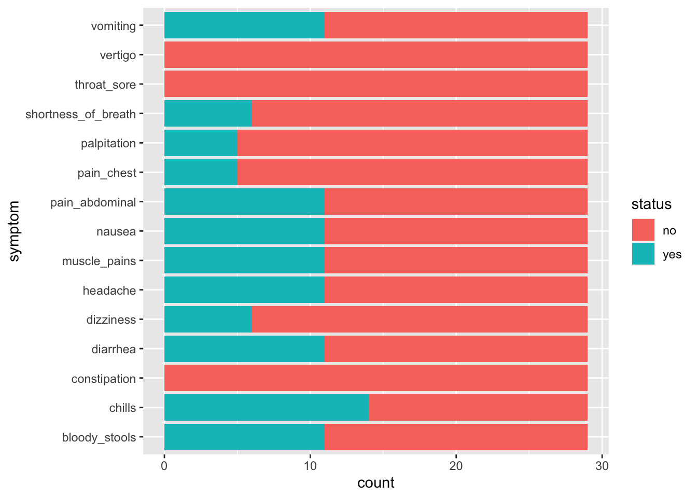

Chapter 5 Solving the outbreak!
5.1 Solving an outbreak!
We first need to load in the packages that we will be using and our data.
üîç What are packages?
Packages are bundles of code and data that can be installed by users of R. They can help us inspect our data using simpler language. We are using the packages tidyverse Wickham et al. (2019) and ggmap Kahle, Wickham, and Jackson (2023).
> library(tidyverse)
> library(ggmap)
> outbreak_data <- read.table("https://raw.githubusercontent.com/shaziaruybal/2022-05-04-It-takes-a-spark/master/data/Data.txt",
+ header = T,
+ stringsAsFactors = T)üí° If library(tidyverse) or library(ggmap) is not working, then the packages may not be installed. To do this, simply run install.packages(c("tidyverse", "ggmap")) in the console or in the code chunk.
5.2 What does outbreak_data look like ?
[1] "Firstname" "Class" "Height" "Weight" "Age" "Sex" "Sickness" "Temperature"
[9] "shortness_of_breath" "chills" "palpitation" "bloody_stools" "pain_chest" "abdominal_cramps" "dizziness" "nausea"
[17] "vomiting" "vertigo" "dizziness.1" "cough" "fever" "diarrhea" "constipation" "headache"
[25] "pain_abdominal" "throat_sore" "muscle_pains" 5.3 What happens if you try to view outbreak_data?
The number one step in data analysis is looking at the data we have to work with.
To look specifically at one column we can select the column using a pipe or %>%.
Height
1 61.7
2 60.0
3 60.5
4 61.7
5 62.0
6 62.3
7 60.9
8 60.3
9 62.7
10 61.0
11 61.3
12 61.8
13 60.4
14 62.2
15 61.9
16 61.8
17 61.1
18 62.2
19 61.9
20 61.8
21 60.9
22 62.2
23 60.9
24 60.3
25 62.7
26 61.8
27 61.1
28 62.0
29 62.35.4 Plotting our data
How to construct a plot
- what data are we working with
- What do we want to put on the x-axis
- What do we want to put on the y-axis
- What are aesthetics?

These are both pieces of data represented by numbers - how else might we record data?

5.7 Generating summaries
Sex n
1 F 11
2 M 18 Sickness n
1 N 18
2 Y 11Let’s combine both…
Sex Sickness n
1 F N 7
2 F Y 4
3 M N 11
4 M Y 75.8 Calculating median, mean, min and max…
> outbreak_data %>%
+ summarise(median_age = median(Age),
+ min_age = min(Age),
+ max_age = max(Age),
+ mean_age = mean(Age)) median_age min_age max_age mean_age
1 12 10 13 11.58621How about grouped by Sex?
> outbreak_data %>%
+ group_by(Class) %>%
+ summarise(median_age = median(Age),
+ min_age = min(Age),
+ max_age = max(Age),
+ mean_age = mean(Age))# A tibble: 4 × 5
Class median_age min_age max_age mean_age
<fct> <dbl> <int> <int> <dbl>
1 A 12 10 13 11.8
2 B 11 10 13 11.7
3 C 12 10 13 11.7
4 D 11 10 13 11.1